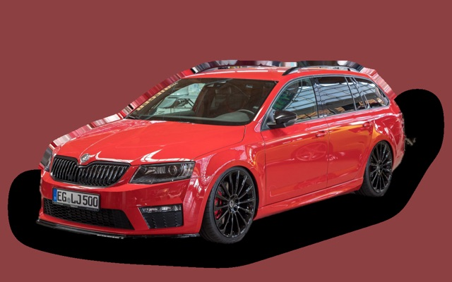

What does a Toyota Avensis Estate cost per month?
A 2015 Toyota Avensis Estate costs about SEK 3,072 a month, all in.
SEK 3,072per month, 2015 model
SEK 82,000price, 2015 model
SEK 224,900last new price
Cvalue grade (2015)
Monthly cost by model year
| Model year | Version in the calculation | Price | Per month | Grade |
|---|---|---|---|---|
| 2018 | 1.8 147 manuell, Life | SEK 111,000 | SEK 3,199 | B |
| 2015 | 1.8 147 manuell, Life | SEK 82,000 | SEK 3,072 | C |
| 2012 | 1.8 147 manuell, Life | SEK 61,000 | SEK 2,881 | C |
Based on 5 years of ownership and 12,500 km a year, with fuel prices from 2026-10-22. The monthly cost includes depreciation, fuel, servicing and repairs, insurance and road tax.
How the cost splits for a 2015 car
- Depreciation: SEK 516/mo
- Fuel: SEK 1,584/mo
- Servicing and repairs: SEK 671/mo
- Insurance: SEK 207/mo
- Road tax: SEK 94/mo
Used prices in ads
| Model year | Median price | Ads | Typical mileage |
|---|---|---|---|
| 2017 | SEK 140,000 | 8 | 166,000 km |
| 2016 | SEK 127,400 | 21 | 156,000 km |
| 2015 | SEK 119,800 | 20 | 187,000 km |
| 2014 | SEK 99,400 | 13 | 184,000 km |
| 2013 | SEK 80,000 | 20 | 203,000 km |
| 2012 | SEK 64,900 | 29 | 247,000 km |
| 2011 | SEK 49,700 | 24 | 241,000 km |
| 2010 | SEK 61,600 | 24 | 228,000 km |
| 2009 | SEK 49,400 | 34 | 277,000 km |
The median price in Swedish ads by model year in October 2026 (source: Blocket). Ad prices are asking prices, and the final price may be lower.
Engines and versions
| Engine | Fuel | Power | 0–100 km/h | Consumption (WLTP) | Range | Model years | Extra cost |
|---|---|---|---|---|---|---|---|
| 1.8 147 manuell | Petrol | 147 hp | 9.9 s | 6.3 l/100 km | – | 2009–2018 | – |
| 2.0 152 Multidrive S | Petrol | 152 hp | 10.4 s | 6.5 l/100 km | – | 2009–2018 | +SEK 30,000 |
| 1.6 D-4D 112 | Diesel | 112 hp | 11.6 s | 4.4 l/100 km | – | 2016–2018 | – |
- Trim: Life, Executive (+SEK 60,000)
Facts
- Body
- Estate
- Model years
- 2009–2018
- Last new price
- SEK 224,900
- Boot
- 543 litres
- Euro NCAP
- 5 of 5 stars
- New-car warranty
- 3 years
- Reliability
- 4.5 of 5
- Comprehensive insurance, estimate
- SEK 5,000/yr
- Servicing, estimate
- SEK 3,600/yr
Common faults to watch for
- Rusty brake and fuel lines, repair about SEK 5,500
- Particulate filter and EGR (diesel), repair about SEK 12,000
The faults apply to some engines and model years. The calculator works out the risk for the exact version you choose.
Pros and cons
Pro
Very reliable estate that is cheap used.
Con
No longer made, with no hybrid.
Similar cars

Skoda Octavia Estate IIISEK 3,048/mo as a 2017 model Hyundai i30 WagonSEK 3,042/mo as a 2022 model
Hyundai i30 WagonSEK 3,042/mo as a 2022 model Ford Mondeo EstateSEK 3,027/mo as a 2019 model
Ford Mondeo EstateSEK 3,027/mo as a 2019 model Volvo V50SEK 3,160/mo as a 2009 model
Volvo V50SEK 3,160/mo as a 2009 model- No pictureSeat Leon SportstourerSEK 3,166/mo as a 2023 model
 Toyota Corolla Touring SportsSEK 2,951/mo as a 2023 model
Toyota Corolla Touring SportsSEK 2,951/mo as a 2023 model
Updated 2026-10-27 · ad data Oct 2026